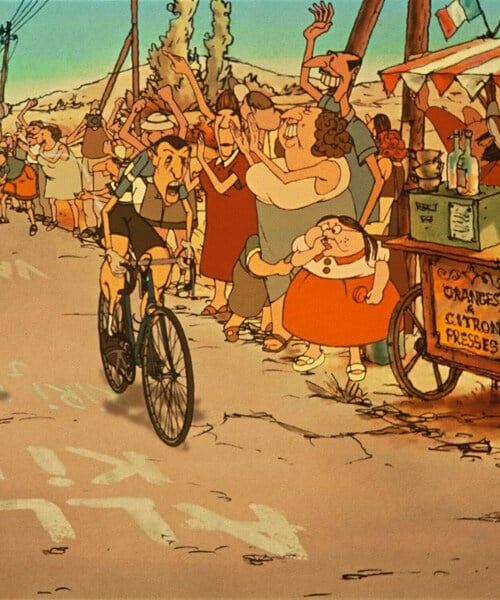

RISCOPRIRE L'ANIMAZIONE D'AUTORE
Comunemente relegato a genere cinematografico per bambini, il mondo dell’animazione rivela invece un universo denso di potenzialità e strumenti espressivi per un pubblico trasversale. Esploriamo alcune opere italiane e internazionali che mettono in luce le possibilità dell’animazione d’autore.
Introduzione all'animazione come arte non solo per bambini
L’animazione è da sempre stata legata all’universo dell'infanzia, un mezzo per intrattenere i più giovani con storie leggere e colorate. Tuttavia, negli ultimi decenni, l’animazione ha attraversato una profonda trasformazione, passando da semplice strumento di svago a vera e propria forma d'arte. Non è più unicamente destinata ai bambini, ma è diventata un linguaggio espressivo che sa rivolgersi a un pubblico adulto, trattando tematiche complesse e universali. Oggi, l’animazione viene utilizzata per esplorare una vasta gamma di argomenti: dalle problematiche sociali, alle riflessioni psicologiche, alle emozioni più profonde. Gli autori e registi, come Guillermo Del Toro, considerano l’animazione una forma artistica matura e sofisticata, capace di superare i limiti dei tradizionali generi cinematografici. Non è solo un mezzo per raccontare storie per bambini, ma un’arte che abbraccia ogni tipo di narrazione, dalla più fantastica alla più realistica.
L’evoluzione dell’animazione: dal film per bambini alla forma d’arte espressiva e complessa
Nel corso del XX e XXI secolo, l’animazione ha subito una straordinaria evoluzione, passando da una forma di intrattenimento per bambini a una vera e propria disciplina artistica, con il potere di esplorare temi profondi e complessi. I film d'animazione tradizionali, come quelli prodotti dalla Disney e dai grandi studi hollywoodiani, erano pensati per un pubblico infantile e si concentravano principalmente su storie fiabesche e avventurose. Tuttavia, con l'avvento di nuove tecnologie e con il lavoro di registi visionari, l'animazione ha iniziato a spingersi oltre. Registi come Guillermo Del Toro hanno cominciato a usare l'animazione per esplorare il lato oscuro della psiche umana, le paure, i sogni e le realtà alternative. Film come *Joker: Folie à Deux* dimostrano come l'animazione possa essere un mezzo potente per raccontare storie adulte e affrontare temi come la follia, l'isolamento e la ricerca di identità. L’animazione è diventata quindi una forma d’arte che non conosce limiti, capace di affrontare tematiche politiche, sociali ed esistenziali, al pari del cinema in live-action.
L’importanza dell’animazione d’autore nella sperimentazione tecnica e tematica
L’animazione d’autore è un campo che si distingue per la sua attitudine alla sperimentazione tecnica e tematica. Gli autori indipendenti e i registi di nicchia utilizzano l’animazione non solo per raccontare storie, ma anche per spingere i confini della tecnologia e dell'espressione visiva. A differenza dei grandi studi d’animazione, che tendono a seguire schemi consolidati, l’animazione d’autore si concentra sull'innovazione, sia nella tecnica che nei contenuti. Film come *Flow* di Gints Zilbalodis, ad esempio, utilizzano software avanzati come Blender, un programma open source, per creare mondi visuali affascinanti senza fare ricorso ai dialoghi. Questa scelta consente al film di concentrarsi interamente sulla narrazione visiva e sulla costruzione di un’atmosfera emotiva unica, dimostrando come l’animazione possa andare oltre la semplice rappresentazione grafica e diventare un vero e proprio strumento narrativo. Inoltre, l’animazione d’autore affronta temi di grande attualità, come la crisi ambientale e la sostenibilità, trattando questioni complesse con un linguaggio accessibile ma profondo. Un esempio in tal senso è *Sauvages* di Claude Barras, che utilizza la tecnica della stop-motion per raccontare la lotta contro la distruzione dell'ambiente naturale, unendo innovazione tecnica e impegno sociale. L’animazione d’autore, dunque, non solo offre nuove possibilità estetiche, ma funge anche da veicolo per una riflessione critica sul mondo contemporaneo.
